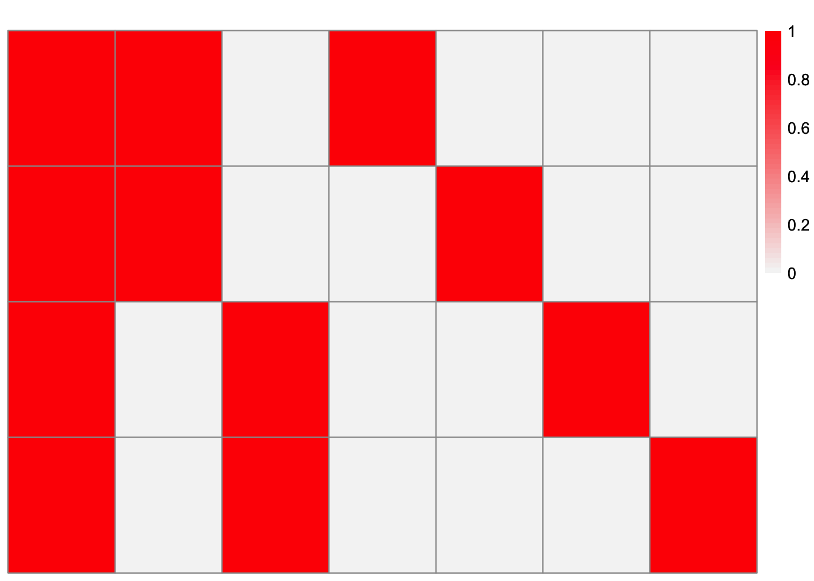
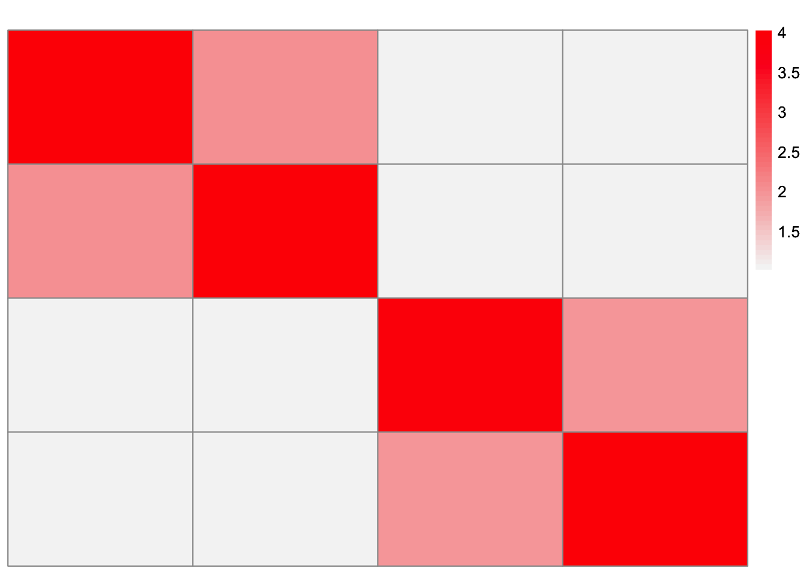
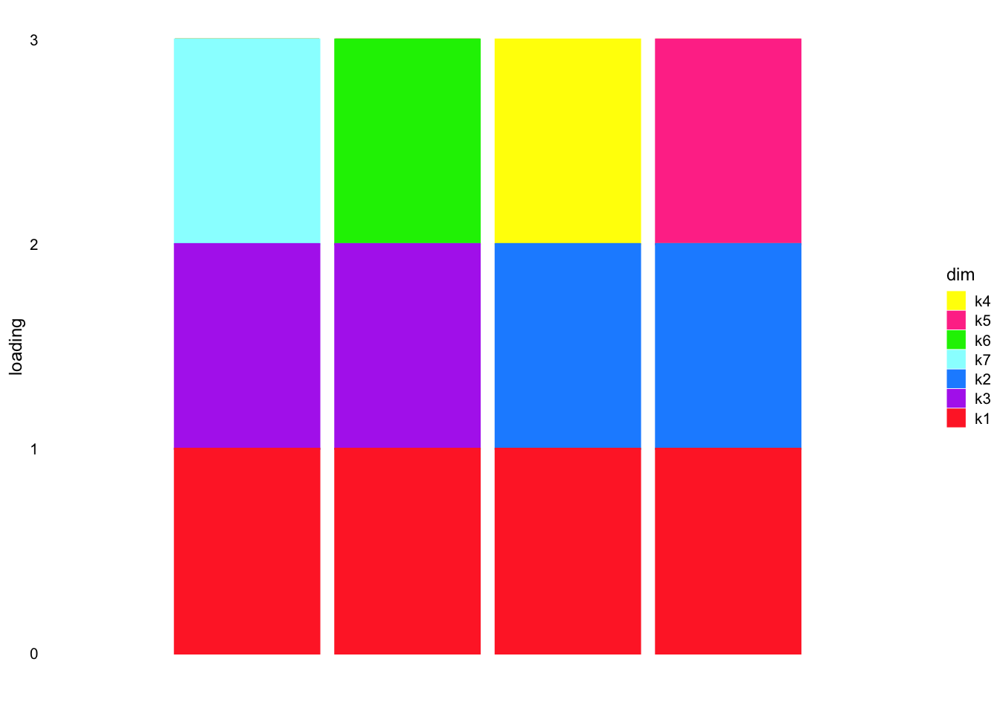
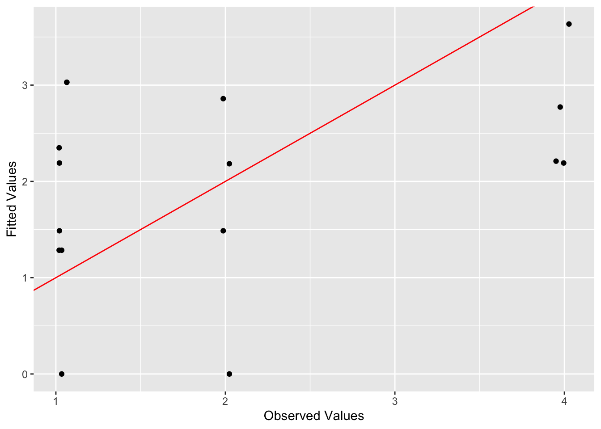
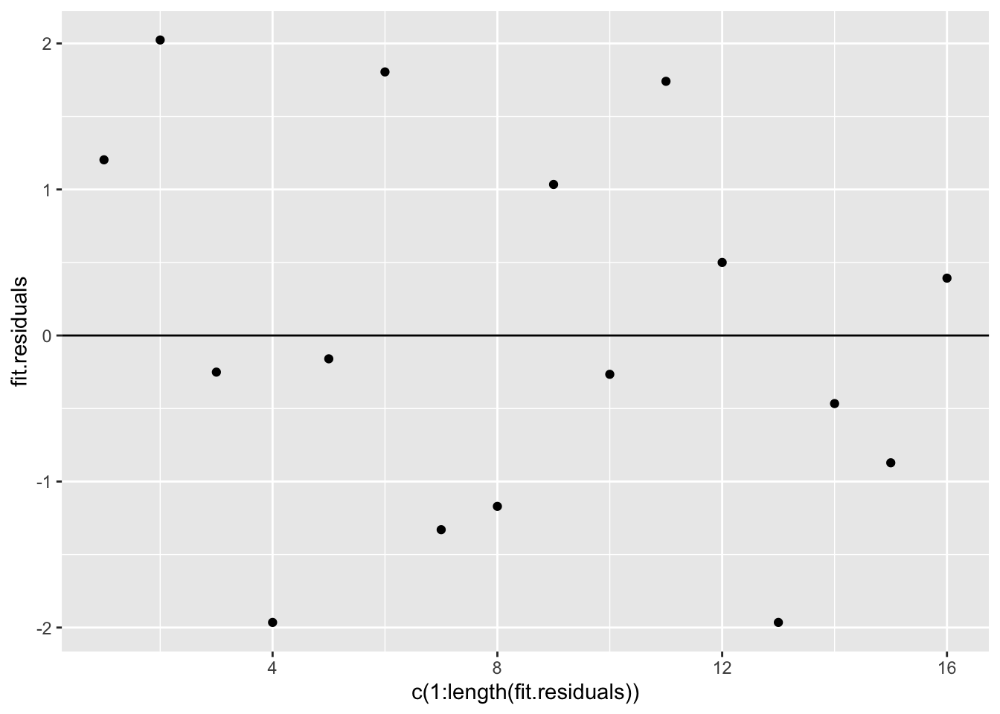
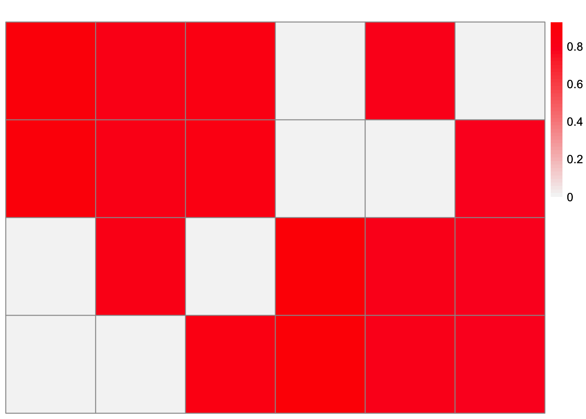
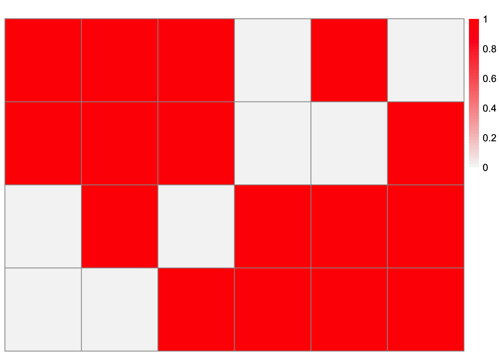
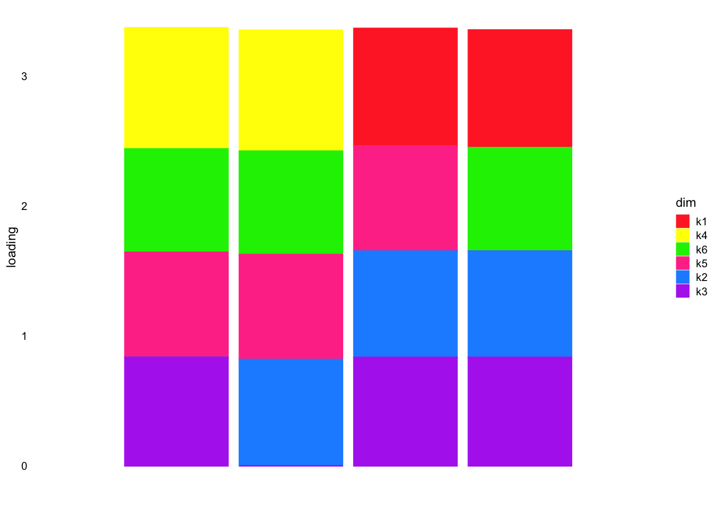

Last updated: 2024-06-30
Checks: 7 0
Knit directory:
drift_matrix_factorization/
This reproducible R Markdown analysis was created with workflowr (version 1.7.1). The Checks tab describes the reproducibility checks that were applied when the results were created. The Past versions tab lists the development history.
Great! Since the R Markdown file has been committed to the Git repository, you know the exact version of the code that produced these results.
Great job! The global environment was empty. Objects defined in the global environment can affect the analysis in your R Markdown file in unknown ways. For reproduciblity it’s best to always run the code in an empty environment.
The command set.seed(20240416) was run prior to running
the code in the R Markdown file. Setting a seed ensures that any results
that rely on randomness, e.g. subsampling or permutations, are
reproducible.
Great job! Recording the operating system, R version, and package versions is critical for reproducibility.
Nice! There were no cached chunks for this analysis, so you can be confident that you successfully produced the results during this run.
Great job! Using relative paths to the files within your workflowr project makes it easier to run your code on other machines.
Great! You are using Git for version control. Tracking code development and connecting the code version to the results is critical for reproducibility.
The results in this page were generated with repository version bb92a11. See the Past versions tab to see a history of the changes made to the R Markdown and HTML files.
Note that you need to be careful to ensure that all relevant files for
the analysis have been committed to Git prior to generating the results
(you can use wflow_publish or
wflow_git_commit). workflowr only checks the R Markdown
file, but you know if there are other scripts or data files that it
depends on. Below is the status of the Git repository when the results
were generated:
Ignored files:
Ignored: .DS_Store
Ignored: .Rhistory
Untracked files:
Untracked: analysis/distance-based-regression-simulation.Rmd
Note that any generated files, e.g. HTML, png, CSS, etc., are not included in this status report because it is ok for generated content to have uncommitted changes.
These are the previous versions of the repository in which changes were
made to the R Markdown
(analysis/four-population-simulation.Rmd) and HTML
(docs/four-population-simulation.html) files. If you’ve
configured a remote Git repository (see ?wflow_git_remote),
click on the hyperlinks in the table below to view the files as they
were in that past version.
| File | Version | Author | Date | Message |
|---|---|---|---|---|
| Rmd | bb92a11 | Annie Xie | 2024-06-30 | Add four-population simulation |
In this analysis, I am interested in exploring how well a regression-based factorization can recover tree structure in the data. Therefore, I wanted to run a simulation where the “true” loadings matrix has a tree structure (i.e. the loadings are binary and hierarchical), and see how well the regression-based factorization matches the true values. In this analysis, I simulate four populations from a symmetric tree structure where the branch factors are all of the same magnitude. (I did another simulation where I model six populations from a tree with differing factor magnitudes, but I wanted to try a simpler simulation.)
library(flashier)Loading required package: ebnmlibrary(ebnm)
library(ashr)
library(ggplot2)
library(pheatmap)
library(NNLM)plot_heatmap <- function(L, title = ""){
### define the color map
cols <- colorRampPalette(c("gray96", "red"))(49)
brks <- seq(min(L), max(L), length=50)
plt <- pheatmap(L, show_rownames = FALSE, show_colnames = FALSE, cluster_rows = FALSE, cluster_cols = FALSE, color = cols, breaks = brks, main = title)
return(plt)
}structure_plot_general = function(Lhat,Fhat,grouping,title=NULL, loadings_order = 'embed', print_plot=FALSE, seed=12345, n_samples = NULL, gap=40, show_legend=TRUE, K = NULL, plot.colors = NULL, normalize = TRUE){
set.seed(seed)
#if not told to plot all samples, then plot a sub-sample
if(is.null(n_samples)&all(loadings_order == "embed")){
n_samples = 2000
}
if(is.null(plot.colors)){
plot.colors <- rainbow(ncol(Lhat))
}
#normalize L such that each factor has a maximum loading value of 1
#results in an error if all the entries of a column are 0
# this doesn't do the normalization if all the entries are below 1 (think about!)
if (normalize == TRUE){
Lhat = apply(Lhat,2,function(z){z/max(max(z),0.00001)})
}
#if not told to plot all factors, then plot the requested subset
if(!is.null(K)){
Lhat = Lhat[,1:K]
Fhat = Fhat[,1:K]
}
Fhat = matrix(1,nrow=3,ncol=ncol(Lhat))
#add column names to Lhat if it doesn't have column names
if(is.null(colnames(Lhat))){
colnames(Lhat) <- paste0("k",1:ncol(Lhat))
}
#define multinom_topic_model_fit for structure plot function
fit_list <- list(L = Lhat,F = Fhat)
class(fit_list) <- c("multinom_topic_model_fit", "list")
#plot
p <- fastTopics::structure_plot(fit_list,grouping = grouping, loadings_order = loadings_order, n = n_samples, colors = plot.colors, gap = gap,verbose=F) + labs(y = "loading",color = "dim",fill = "dim") + ggtitle(title)
if(!show_legend){
p <- p + theme(legend.position="none")
}
if(print_plot){
print(p)
}
return(p)
}source("~/Documents/PhD 3/Research/EBCD/ebcd_functions.R")To generate the data, I modified code I found from Jason’s github repository. We are modeling four populations that follow a tree structure. Therefore, the loadings matrix is binary and has a hierarchical structure. The entries of the factor matrix are generated using normal random variables. Normal random noise is added to the product of the loadings and factor matrix. One thing to note is that the signal to noise ratio (and thus the variance of the estimate) is partially affected by the number of genes we are simulating. It might be interesting to vary the number of genes simulated and see how that affects the estimate.
# modified from Jason's code
sim_4pops_noadmix <- function(pop_sizes,
branch_sds,
indiv_sd,
n_genes = 1000,
seed = 666) {
set.seed(seed)
n <- sum(pop_sizes)
p <- n_genes
FF <- matrix(rnorm(7 * p, sd = rep(branch_sds, each = p)), ncol = 7)
LL <- matrix(0, nrow = n, ncol = 7)
LL[, 1] <- 1
LL[, 2] <- rep(c(1, 1, 0, 0), times = pop_sizes)
LL[, 3] <- rep(c(0, 0, 1, 1), times = pop_sizes)
LL[, 4] <- rep(c(1, 0, 0, 0), times = pop_sizes)
LL[, 5] <- rep(c(0, 1, 0, 0), times = pop_sizes)
LL[, 6] <- rep(c(0, 0, 1, 0), times = pop_sizes)
LL[, 7] <- rep(c(0, 0, 0, 1), times = pop_sizes)
E <- matrix(rnorm(n * p, sd = indiv_sd), nrow = n)
pops <- rep(LETTERS[1:length(pop_sizes)], times = pop_sizes)
return(list(Y = LL %*% t(FF) + E, LL = LL, FF = FF, pops = pops))
}# modified from Jason's code
sim_data_4pop_10kgenes <- sim_4pops_noadmix(pop_sizes = c(rep(1, 4)),
branch_sds = rep(1,7),
indiv_sd = 1,
n_genes = 10000)dim(sim_data_4pop_10kgenes$Y)[1] 4 10000plot_heatmap(sim_data_4pop_10kgenes$LL)
plot_heatmap(sim_data_4pop_10kgenes$Y %*% t(sim_data_4pop_10kgenes$Y)/ ncol(sim_data_4pop_10kgenes$Y))
structure_plot_general(sim_data_4pop_10kgenes$LL,
sim_data_4pop_10kgenes$LL,
n_samples = 4,
plot.colors = c('#FF3030', '#1E90FF', '#B23AEE', '#FFFF00', '#FF3E96', '#00EE00',
'#97FFFF'))
We see that all the populations share k1 (the red bar). In addition, populations 1 and 2 share k3 (the purple bar) and populations 3 and 4 share k2 (the dark blue bar). Each individual population also has their own unique component that distinguishes them from the other populations.
Here, we will use penalized-regression to find a factorization of the
data matrix. The details can be found in the
small-sample-factorization file.
I think, theoretically, the penalized-regression method should be able to recover the true loadings matrix. In particular, if the data has a hierarchical structure, the estimate will also have structure that is close to hierarchical. But I’m unsure if the correlation between the vectorized \(LL^{T}\) vectors will cause the penalized regression to just pick one covariate out of many correlated covariates. I looked at the correlation between the vectors, and the highest values are about 0.5, which is not very large, but not insignificant either.
#small sample workflow
small_sample_matrix_factorization <- function(P, alpha_l1 = 0){
dat <- t(P) %*% P/ncol(t(P))
n = nrow(t(P))
L_options <- t(expand.grid(replicate(n, 0:1, simplify = FALSE)))
LLt_options <- matrix(rep(0, ncol(L_options)*n*n), ncol = ncol(L_options))
for (i in 1:ncol(L_options)){
LLt_options[,i] <- c(L_options[,i]%*%t(L_options[,i])) #check this
}
nnlm_fit <- nnlm(LLt_options, as.matrix(c(dat), ncol = 1), alpha = c(0,0,alpha_l1))
indices_keep <- (nnlm_fit$coefficients > 0)
lambda <- nnlm_fit$coefficients[indices_keep]
X_keep <- LLt_options[,indices_keep]
rank_one_matrices <- lapply(split(X_keep, seq(ncol(X_keep))), function(x){return(matrix(x, ncol = n))})
LLt_estimate <- matrix(rep(0, prod(dim(dat))), ncol = ncol(dat))
for (i in 1:length(lambda)){
LLt_estimate <- LLt_estimate + lambda[i]*rank_one_matrices[[i]]
}
L_est <- L_options[,indices_keep] %*% diag(sqrt(lambda))
return(list(nnlm_fit = nnlm_fit, LLt_estimate = LLt_estimate, L_est = L_est))
}set.seed(2042)
fit.regression <- small_sample_matrix_factorization(t(sim_data_4pop_10kgenes$Y), alpha_l1 = 2)Warning in nnlm(LLt_options, as.matrix(c(dat), ncol = 1), alpha = c(0, 0, : x
does not have a full column rank. Solution may not be unique.observed.vals <- sim_data_4pop_10kgenes$Y %*% t(sim_data_4pop_10kgenes$Y)/ncol(sim_data_4pop_10kgenes$Y)sum((observed.vals - fit.regression$LLt_estimate)^2)[1] 25.29814This is a plot of the fitted values vs. observed values:
ggplot(data = NULL, aes(x = c(observed.vals), y = c(fit.regression$LLt_estimate))) + geom_point() + geom_abline(intercept = 0, slope = 1, color = 'red') + xlab('Observed Values') + ylab('Fitted Values') 
This is a plot of the residuals:
fit.residuals <- c(observed.vals) - c(fit.regression$LLt_estimate)
ggplot(data = NULL, aes(x = c(1:length(fit.residuals)), y = fit.residuals)) + geom_point() + geom_hline(yintercept = 0)
dim(fit.regression$L_est)[1] 4 6This is a heatmap of the loadings:
plot_heatmap(fit.regression$L_est)
plot_heatmap(t(t(fit.regression$L_est)/apply(fit.regression$L_est,2, max)))
This is a structure plot of the loadings:
structure_plot_general(fit.regression$L_est, fit.regression$L_est,
n_samples = 4,
plot.colors = c('#FF3030', '#1E90FF', '#B23AEE', '#FFFF00', '#FF3E96', '#00EE00',
'#97FFFF', '#FF7F00', '#FFAEB9', '#698B22'), normalize = FALSE)
The regression-based factorization was able to separate populations 1 and 2 and populations 3 and 4 from each other. The estimate did miss the common factor among all of the populations. The other factors combine in various combinations, with a unique combination for each of the four populations. One note is that these estimates may miss the population-specific branches since they could be lumped in with population-specific residual noise. Another observation of this estimate is it is not hierarchical, and thus cannot be easily interpreted as a tree.
I looked at these results with Matthew and, if I remember correctly, the main takeaways were:
In this example, there are some loading vectors which place a loading of 1 on three of the sub-populations and 0 on the remaining sub-population. This can also be thought of as placing a loading of 1 on the remaining sub-population and 0 on the other three. Both of these vectors isolate one sub-population from the other three. In the data generation process, there is a sub-population specific branch for each population. Thus, a loadings vector differentiating one sub-population from the other three makes sense.
log_alphas <- seq(from = log(0.001), to = log(4), length.out = 150)
alphas <- exp(log_alphas)
regression_fits <- list()
for (i in 1:length(alphas)){
alpha_l1 <- alphas[i]
regression_fits[[i]] <- small_sample_matrix_factorization(t(sim_data_4pop_10kgenes$Y), alpha_l1 = alpha_l1)
}alphas[149]
structure_plot_general(regression_fits[[149]]$L_est, regression_fits[[149]]$L_est,
n_samples = 4,)alphas[1]
structure_plot_general(regression_fits[[1]]$L_est, regression_fits[[1]]$L_est,
n_samples = 4,)simulation_workflow <- function(ngenes){
set.seed(ngenes)
dat <- sim_4pops_noadmix(rep(1,4), rep(1,7), 1, n_genes = ngenes)
fit.regression <- small_sample_matrix_factorization(t(dat$Y), alpha_l1 = 1.5)
return(fit.regression)
}I am varying the number of genes to see how they affect the estimate. As the number of genes increases, the variance of the estimate should decrease (and hopefully be concentrated around something that looks like the true value). Therefore, I suspect that as the number of genes increases, then the estimate should look more like the true loadings matrix.
ngene_options <- c(1000, 5000, 10000, 15000, 20000, 25000, 100000)
varying_ngenes_fits <- list()
for (i in 1:length(ngene_options)){
varying_ngenes_fits[[i]] <- simulation_workflow(ngene_options[i])
}ngene_options[1]
structure_plot_general(varying_ngenes_fits[[1]]$L_est, varying_ngenes_fits[[1]]$L_est,
n_samples = 4,)ngene_options[7]
structure_plot_general(varying_ngenes_fits[[7]]$L_est, varying_ngenes_fits[[7]]$L_est,
n_samples = 4,)simulation_workflow_sd <- function(sd, seed = 1094){
set.seed(seed)
dat <- sim_4pops_noadmix(rep(1,4), rep(1,7), 1, indiv_sd = sd, n_genes = 1000)
fit.regression <- small_sample_matrix_factorization(t(dat$Y), alpha_l1 = 1)
return(fit.regression)
}sd_options <- c(0.001, 0.01, 0.05, 0.1, 0.5, 0.75, 1)
varying_indiv_sd_fits <- list()
for (i in 1:length(sd_options)){
varying_indiv_sd_fits[[i]] <- simulation_workflow_sd(sd_options[i])
}sd_options[2]
structure_plot_general(varying_indiv_sd_fits[[7]]$L_est, varying_indiv_sd_fits[[7]]$L_est, n_samples = 4,)
sessionInfo()R version 4.3.2 (2023-10-31)
Platform: aarch64-apple-darwin20 (64-bit)
Running under: macOS Sonoma 14.4.1
Matrix products: default
BLAS: /Library/Frameworks/R.framework/Versions/4.3-arm64/Resources/lib/libRblas.0.dylib
LAPACK: /Library/Frameworks/R.framework/Versions/4.3-arm64/Resources/lib/libRlapack.dylib; LAPACK version 3.11.0
locale:
[1] en_US.UTF-8/en_US.UTF-8/en_US.UTF-8/C/en_US.UTF-8/en_US.UTF-8
time zone: America/New_York
tzcode source: internal
attached base packages:
[1] stats graphics grDevices utils datasets methods base
other attached packages:
[1] NNLM_0.4.4 pheatmap_1.0.12 ggplot2_3.5.1 ashr_2.2-66
[5] flashier_1.0.53 ebnm_1.1-27 workflowr_1.7.1
loaded via a namespace (and not attached):
[1] pbapply_1.7-2 rlang_1.1.3 magrittr_2.0.3
[4] git2r_0.33.0 horseshoe_0.2.0 compiler_4.3.2
[7] getPass_0.2-4 callr_3.7.6 vctrs_0.6.5
[10] quantreg_5.97 quadprog_1.5-8 stringr_1.5.1
[13] pkgconfig_2.0.3 crayon_1.5.2 fastmap_1.2.0
[16] mcmc_0.9-8 labeling_0.4.3 utf8_1.2.4
[19] promises_1.3.0 rmarkdown_2.27 ps_1.7.6
[22] MatrixModels_0.5-3 purrr_1.0.2 xfun_0.44
[25] cachem_1.1.0 trust_0.1-8 jsonlite_1.8.8
[28] progress_1.2.3 highr_0.11 later_1.3.2
[31] irlba_2.3.5.1 parallel_4.3.2 prettyunits_1.2.0
[34] R6_2.5.1 bslib_0.7.0 stringi_1.8.4
[37] RColorBrewer_1.1-3 SQUAREM_2021.1 jquerylib_0.1.4
[40] Rcpp_1.0.12 knitr_1.45 httpuv_1.6.15
[43] Matrix_1.6-5 splines_4.3.2 tidyselect_1.2.1
[46] rstudioapi_0.16.0 yaml_2.3.8 processx_3.8.4
[49] lattice_0.22-6 tibble_3.2.1 withr_3.0.0
[52] coda_0.19-4.1 evaluate_0.23 Rtsne_0.17
[55] survival_3.6-4 RcppParallel_5.1.7 pillar_1.9.0
[58] whisker_0.4.1 plotly_4.10.4 softImpute_1.4-1
[61] generics_0.1.3 rprojroot_2.0.4 invgamma_1.1
[64] truncnorm_1.0-9 hms_1.1.3 munsell_0.5.1
[67] scales_1.3.0 glue_1.7.0 scatterplot3d_0.3-44
[70] lazyeval_0.2.2 tools_4.3.2 data.table_1.15.4
[73] SparseM_1.81 fs_1.6.4 cowplot_1.1.3
[76] grid_4.3.2 tidyr_1.3.1 MCMCpack_1.7-0
[79] colorspace_2.1-0 deconvolveR_1.2-1 cli_3.6.2
[82] Polychrome_1.5.1 fansi_1.0.6 mixsqp_0.3-54
[85] viridisLite_0.4.2 dplyr_1.1.4 uwot_0.1.16
[88] gtable_0.3.5 fastTopics_0.6-142 sass_0.4.9
[91] digest_0.6.35 ggrepel_0.9.5 farver_2.1.2
[94] htmlwidgets_1.6.4 htmltools_0.5.8.1 lifecycle_1.0.4
[97] httr_1.4.7 MASS_7.3-60.0.1